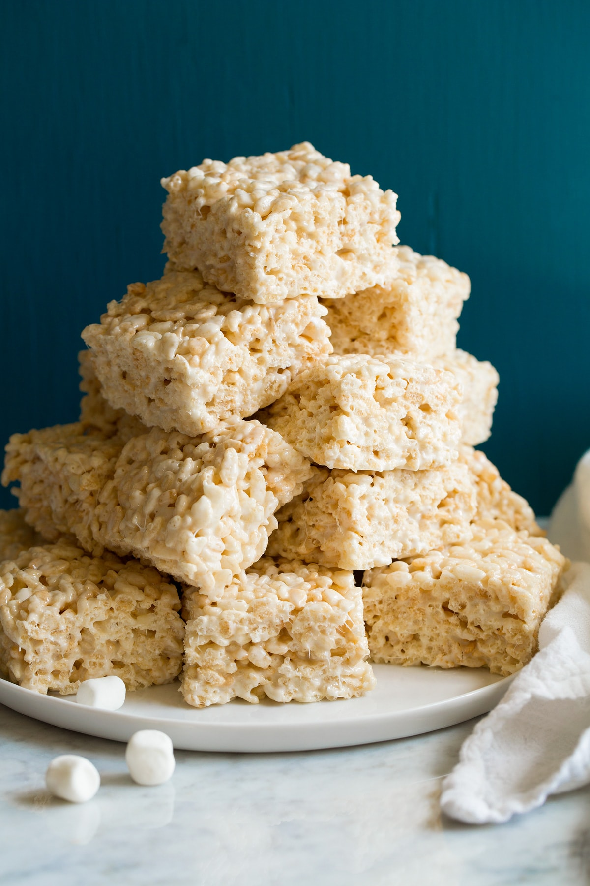

Rice Crispies

Description
These squidgy crispy rice treats are made with just 3 ingredients.
Ingredients
- ¼ cup butter
- 4 cups miniature marshmallows
- 5 cups crispy rice cereal
Steps
- Melt butter in a large saucepan over low heat.
- Add marshmallows and stir until melted and well combined. Cook 2 minutes longer, stirring constantly. Remove from heat.
- Stir in crispy rice cereal until well coated.
- Press mixture evenly and firmly into a buttered 9x13-inch pan using a buttered spatula or waxed paper.
- Cut into 2-inch squares when cool.